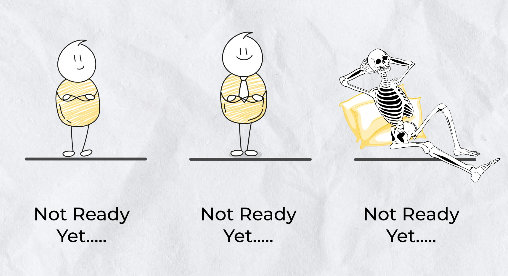

Hello/ Bonjour ᕕ( ᐛ )ᕗ
Welcome to my corner of the web! I'm Ismail Hrimech, a passionate Scala and Spark developer, dedicated to sharing what I've learned to support developers at every level in reaching their full potential. When I'm not immersed in the world of coding, you'll often find me with my family, hiking, or cuddling my cats. Let's code and conquer new heights together!
Bienvenue sur mon espace en ligne ! Je suis Ismail Hrimech, un développeur passionné de Scala et Spark, dédié à la création de solutions élégantes et au partage des connaissances. Lorsque je ne suis pas sur mon poste de dev, vous me trouverez souvent à explorer les joies de la vie de famille, la randonnée et les petits câlins avec mes chats. Ce que j'aime le plus ?
Transmettre ! ٩( ๑╹ ꇴ╹)۶

Attributions:
- The photo used for part of the background.
- The inspiration came from vincentbernat
- Favicon generation by realfavicongenerator